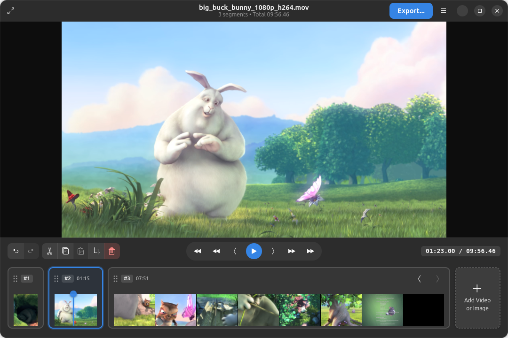
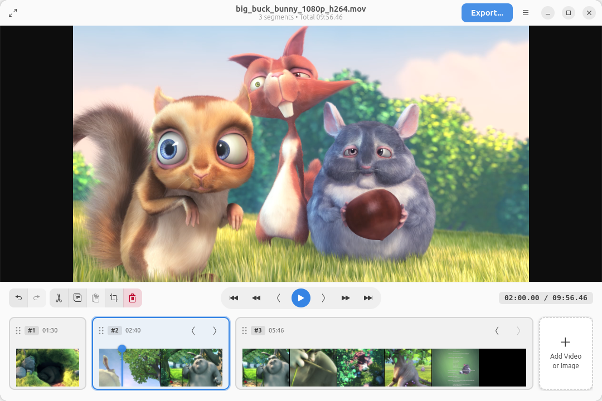
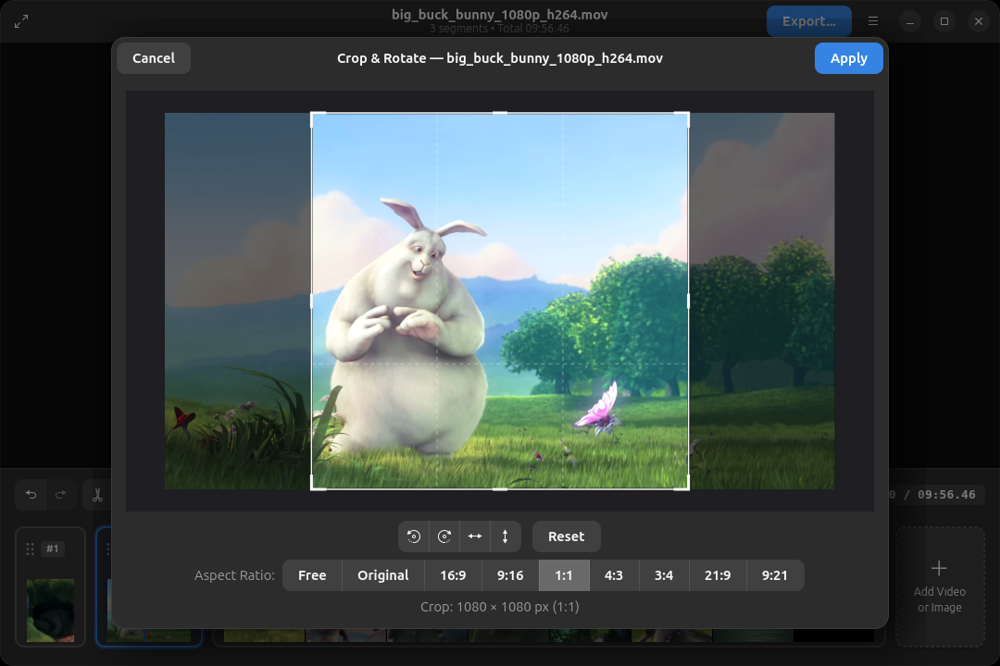
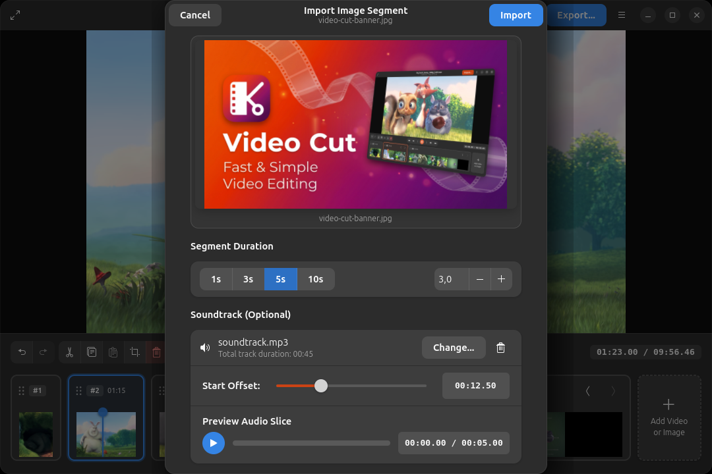
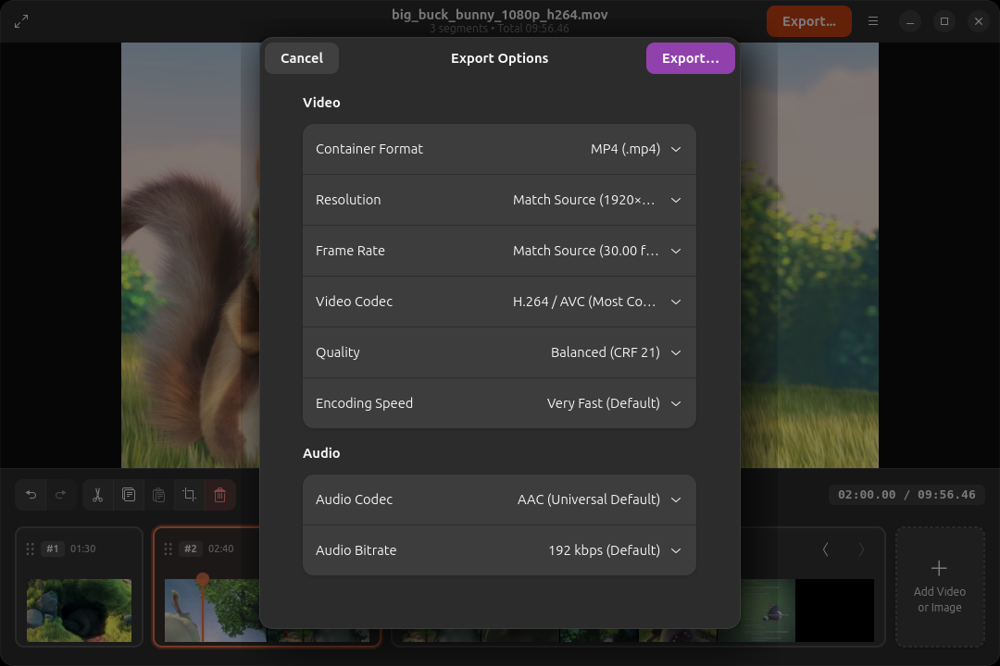
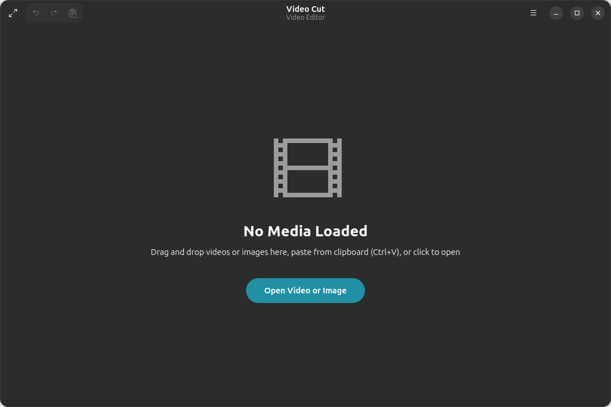
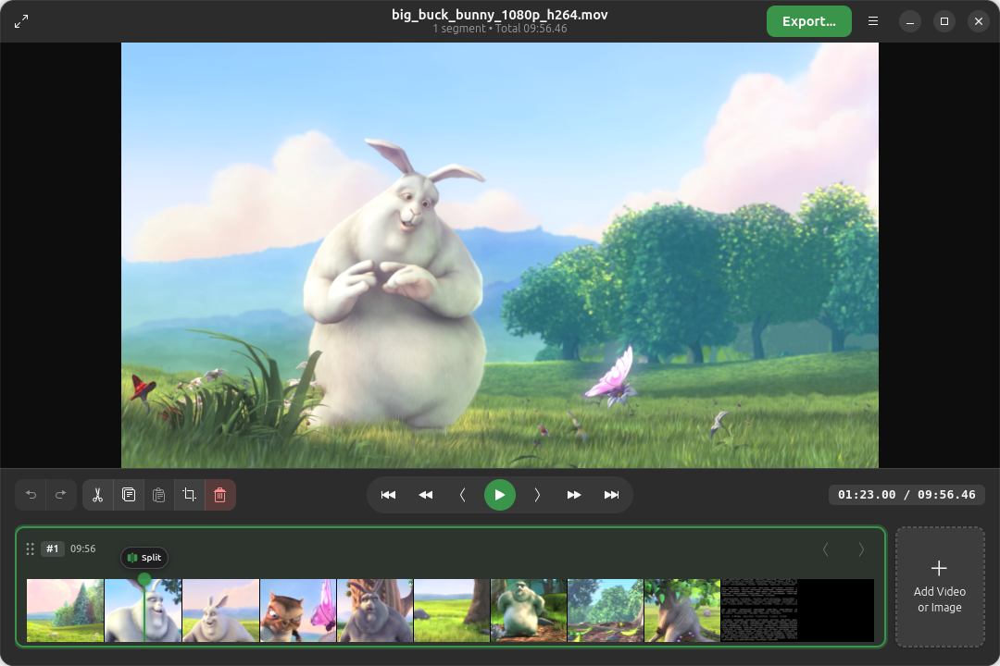

Trim, split, merge, crop, and rotate video clips and images without quality loss. A native GTK4 and Libadwaita experience built specifically for modern Linux desktops.

Cut clips at exact keyframe boundaries in seconds.
Rotate by 90° increments, flip axes, and crop.
Mix photos and still slides directly into video timelines with customizable duration.
Feels right at home on Linux. Responsive, dark-mode native, and lightweight.
Everything you need for everyday video clips, screen captures, and social media exports without bloated complexity.
Video Cut focuses on simplicity and ease of use. Designed natively with GTK4 and Libadwaita to integrate cleanly into the GNOME desktop, it makes cutting, trimming, and reordering video segments straightforward and effortless.

Easily reframe videos for vertical social platforms or zoom into important details. Our visual crop overlay gives you real-time preview feedback with instant aspect ratio snapping.

Combine still images and photographs directly with your video clips. Add background music, voiceovers, or soundtrack audio to image slides to create rich title cards, photo montages, and slideshow transitions.

Click on any screenshot to view in full resolution.

Configurable containers, video/audio codecs, bitrates, and quality presets.

Drop video files directly onto the window or paste from the clipboard.

Instant split action pill at the playhead position for quick cuts.
Choose the package format that best suits your distribution. Current version: v0.3.0
Runs out of the box on Fedora, Arch, Debian, openSUSE, and any modern Linux distribution. No installation required.
chmod +x VideoCut-0.3.0-x86_64.AppImage && ./VideoCut-0.3.0-x86_64.AppImage
One-click install with automatic background updates for Ubuntu, Kubuntu, and any system with snapd.
sudo snap install video-cut
Download the standalone Flatpak bundle from our GitHub release page and install locally.
flatpak install --user ./VideoCut-0.3.0.flatpak
Explore the Python & GTK4 codebase, contribute improvements, or run directly using Poetry / pip.
git clone https://github.com/thor27/video-cut.git
Find release checksums (SHA256), older releases, DEB packages, and release changelogs on GitHub.